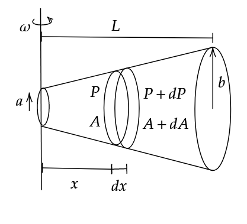

Each small part has circular motion. Hence, we can apply the following formula for an infinitesimally small section and integrate over it to find the pressure profile
\[F = m R \omega^2\tag1\]
We also have the ideal gas equation, \(PV = nRT\) with us, but we shall use its modified form
\[PM = \rho R T\tag2\]

We shall first solve the question generally for any \(A(x)\).
Using eq. (1), we have,
\[(P+dP)(A+dA) - PA = (dm) x \omega^2\tag3\]
\[AdP + PdA = \rho A x (dx) \omega^2\]
Substituting \(\rho = \frac{PM}{RT}\) from (2),
\[AdP + PdA = \frac{PM}{RT} A \omega^2 x dx\]
\[\implies \int_{P_0}^{P} \frac{dP}{P} + \int_{A_0}^{A} \frac{dA}{A} = \frac{M\omega^2}{RT} \int_{0}^{x} x dx\]
\[\ln \left( \frac{PA}{P_0 A_0} \right) = \frac{M \omega^2 x^2}{2RT}\]
\[\therefore P = \frac{P_0 A_0}{A} e^{\frac{M \omega^2 x^2}{2RT}}\tag4\]
Where, \(A\) and \(A_0\) are functions of \(x\).
Now, according to the question, we have,
\[r = \left( \frac{b-a}{L} \right) x + a\]
\[\implies A = \pi r^2 = \pi \left( \left( \frac{b-a}{L} \right) x + a \right)^2\]
\[A_0 = \pi a^2\]
Substituting these values into (4),
\[p = \frac{P_0 a^2 L^2}{\left( (b-a) x + aL \right) ^2} e^{\frac{M \omega^2 x^2}{2RT}}\]